Overview¶
Parsing Overview¶
Parsing the process of transforming xml elements and attributes in an instance document into java objects.
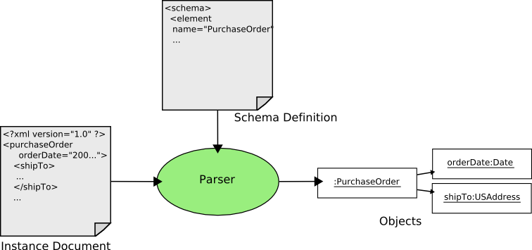During parsing an xml schema is used to assist in the transformation. The parser uses the schema to determine which types of objects various elements and attributes should be transformed into.
Schema Resolution
The first step in parsing an instance document is figuring out the schema for it. Typically in a document which conforms to a particular schema all the information about the schema is present on the root element of the document. For example:
<po:purchaseOrder xmlns:po="http://www.geotools.org/po" xmlns:xsi="http://www.w3.org/2001/XMLSchema-instance" xsi:schemaLocation="http://www.geotools.org/po po.xsd"> ...
The key attribute is xsi:schemaLocation which contains a namespace-schema location mapping. In the above example the mappings tells us that the schema for the namespace “http://www.geotools.org/po” can be found in a file named “po.xsd”. The parser uses this mapping to locate the schema for the document. This is known as Schema Resolution. Once the schema has been “resolved”, it parsed and processing proceeds to the next phase.
Element and Attribute Binding
Once the schema for the document has been resolved the rest of the document is parsed. As elements and attributes are processed the schema is used to lookup information to assist in parsing the document. The term parsing used here really refers to the act of transforming an element or attribute into a java object. This transformation is performed by a binding.
For each element and attribute that is parsed, a binding is located for it. To locate a binding for an element or attribute, the declaration for it is located in the schema. The rules that dictate how element and attribute declarations are resolved are detailed here.
Once a declaration has been found, a set of “bindings” for the declaration are derived. For a single element or attribute, the following bindings may be derived:
- A binding for the element or attribute itself
- A binding for the type of the element or attribute
- A binding for each base type
As an example, consider processing the “purchaseOrder” element shown above. The following bindings would be derived:
- The “purchaseOrder” global element declaration
- The “PurchaseOrderType” type defintion ( the declared type of the “purchaseOrder” element )
- The “anyType” type definition ( the base type of all complex type definitions )
Once a set of bindings has been located, they are executed in a defined order, and the element or attribute is transformed into an object. Binding derivation and execution is explained in greater detail here.
Document Processing
As an instance document is parsed, elements and attributes are transformed into objects. The parser can be thought of as a stack computer in which transformed objects are pushed on a stack to later be consumed by other objects. The following diagram pictorially represents the various states of the stack while an instance document is parsed.
Stack is empty as the parser begins to process the instance document
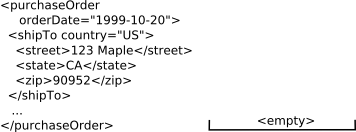Leading edge of the “purhaseOrder” element is reached. On the leading edge of an element, all of its attributes are parsed. In this case the “orderDate” attribute is parsed into a java.util.Date object, and placed on the stack.
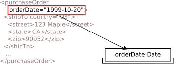Leading edge of the “shipTo” element is reached, and attributes parsed.
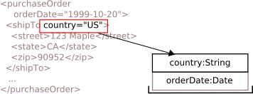Leading and trailing edges of the “street” element are reached. For elements themselves, transformation occurs on the trailing edge. In this case, the street element is transformed to a java.lang.String, and placed on the stack.
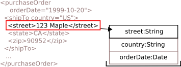Similar to State 3, elements transformed and placed on stack.
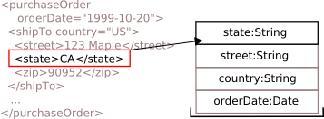Similar to State 4, elements transformed and placed on stack.
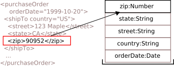Trailing edge of the “shipTo” element. At this state, all the child elements have been processed and exist on the stack. In processing the shipTo element all the values which correspond to child elements and attributes are popped off the stack and used to compose the resulting object for the shipTo element, an instance of Address. The transformed object is then placed on the stack.
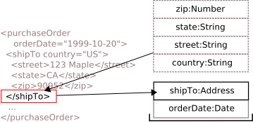Trailing edge of the “purchaseOrder” element, similar to State 6, the objects created for child elements and attributes are used to compose the resulting purchaseOrder object, an instance of PurchaseOrder.
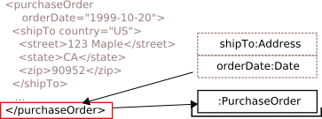Instance document has been processed. The stack contains the single object which corresponds to the root element of the document, in this case “purchaseOrder”.
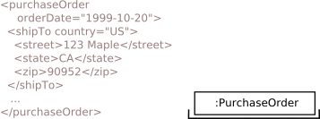
Encoding Overview¶
Encoding is the process of serializing a hierarchy of objects as xml.
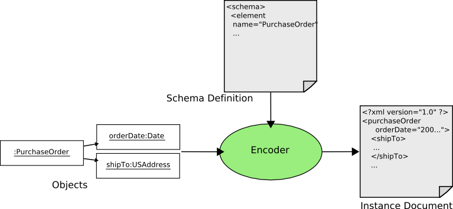
During encoding an xml schema is used to determine how various objects should be encoded as elemements / attributes, and to navigate through the hierachy of objects.
Element and Attribute Binding
As objects are encoded the xml schema is used to locate bindings to perform the encoding process. During encoding bindings serve two roles:
- Serialization of objects as elements and attributes
- Navigation among objects by determining which objects correspond to child elements and attributes of a particular element
Binding derivation for encoding is identical as it is for parsing, explained here.
Object Processing
As an object tree is encoded individual objects are serialized as elements and attributes. The following diagram pictorially represents how the encoding process works.
The first step is to encode the root element of the document, the “PurchaseOrder element , which corresponds to the top object in the tree
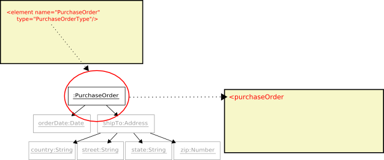Next the the elements type, “PurchaseOrderType”, is used to move the process forward and infer the next object to encode. The type yields the attribute “orderDate”.
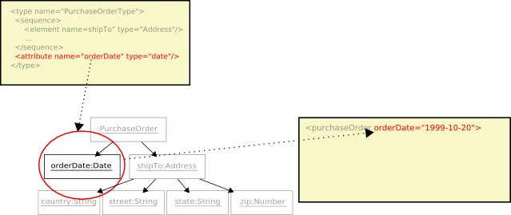Continuing through the contents of “PurchaseOrderType” is the “shipTo” element.
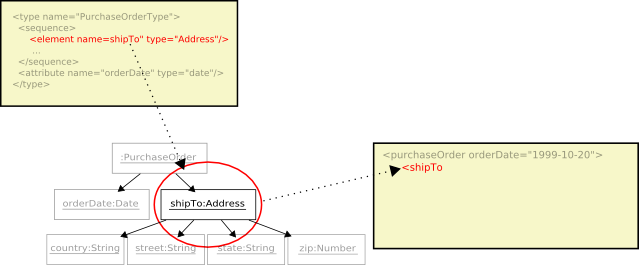Since the “shipTo” element is complex, the encoding process recurses into its type, “USAddress”, and continues on. The type yields the “country” attribute.
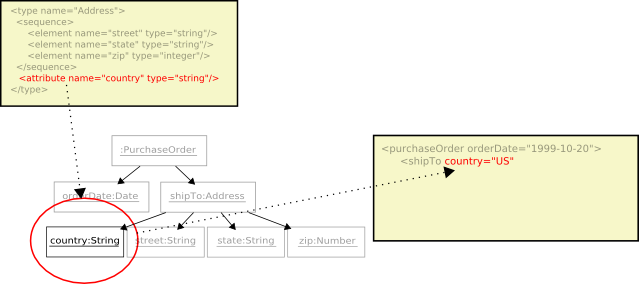Continuing through the contents of “USAddress” is the “street” element.
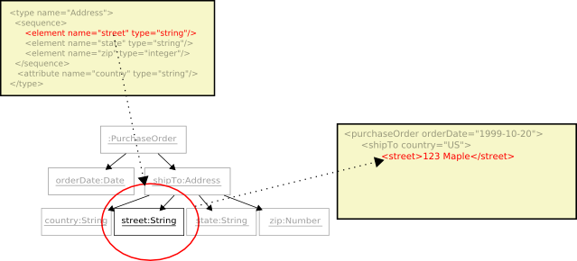And the “state” element
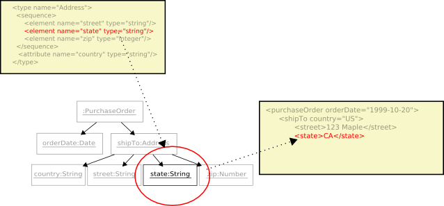And the “zip” element.
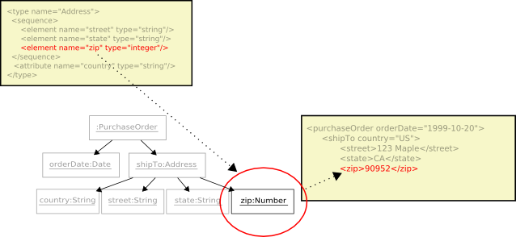All the contents of the “USAddress” type have been completed, the “shipTo” element is closed and recursion pops back to the surrounding type
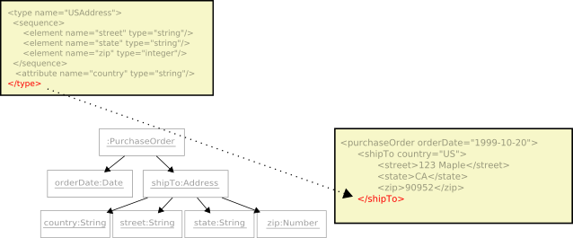All the contents of the “PurchaseOrderType” have been completed, the “purchaseOrder” element is closed. Being the root element of the document there is no containing type and the encoding process is stopped.
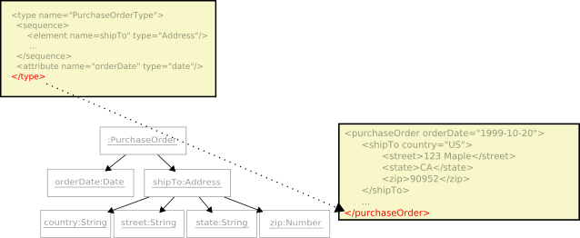